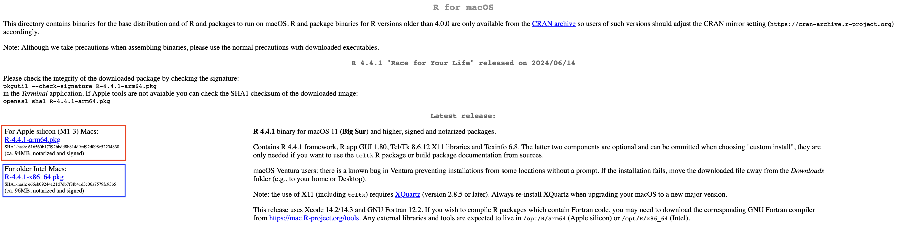
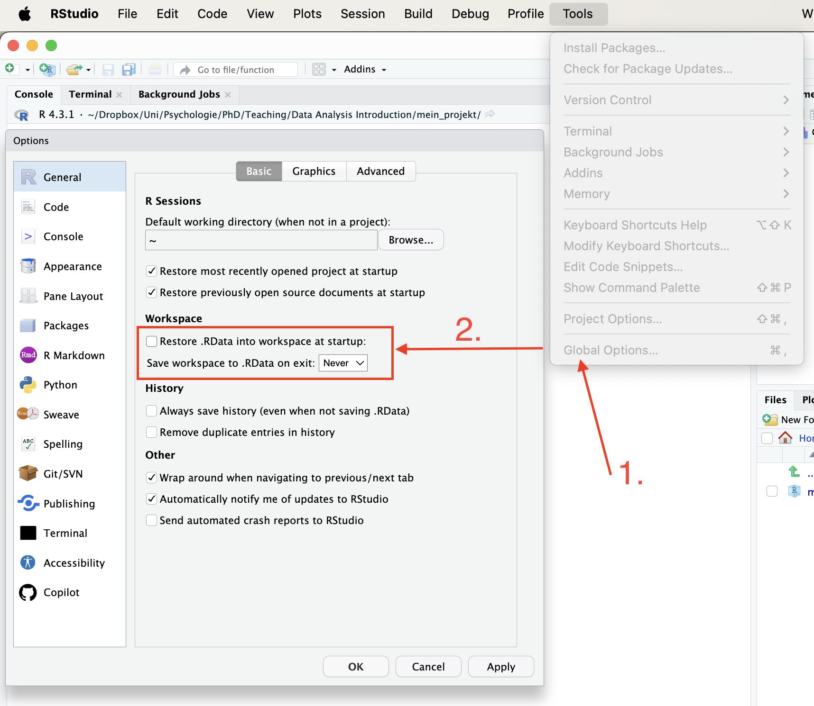
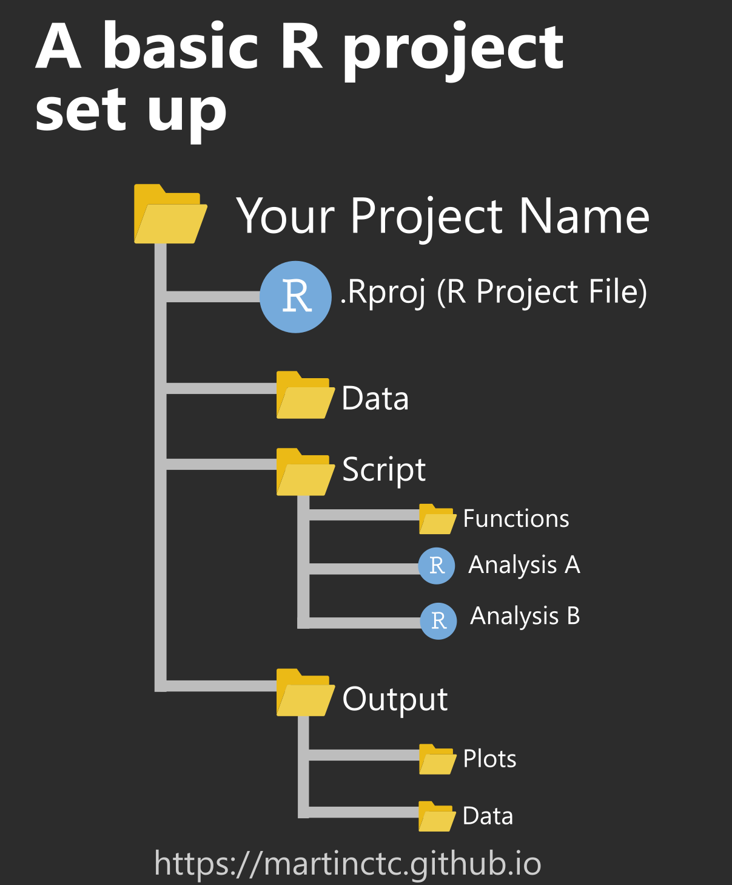
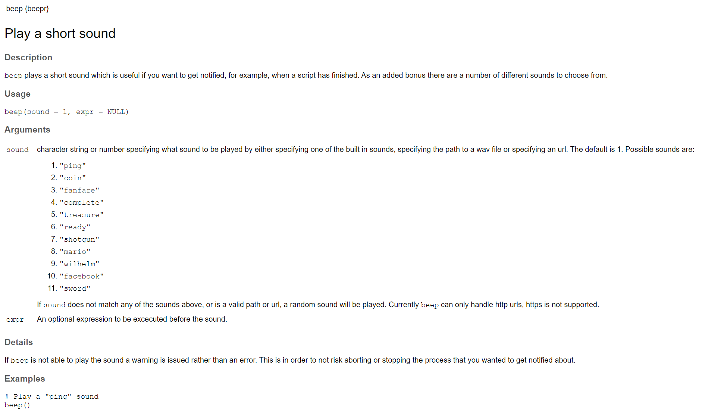
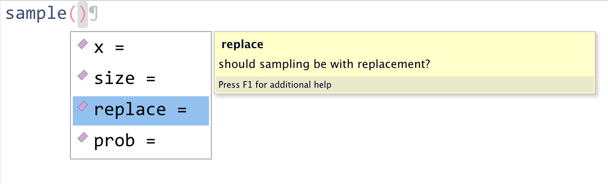
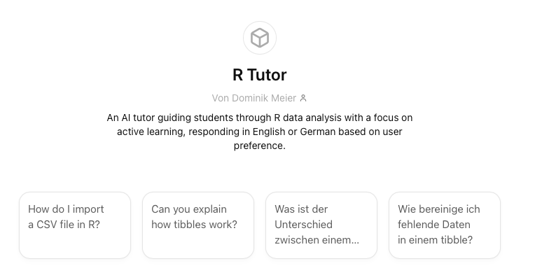

1 Einführung in R und RStudio
1.1 Lerziele
- Wissen, was R und RStudio ist
- Umfang und Möglichkeiten von R kennen
1.2 Wieso R?
R ist eine Programmiersprache, die speziell für statistische Datenanalyse und grafische Darstellungen entwickelt wurde. Sie eignet sich hervorragend für eine Vielzahl von Anwendungen, von einfachen Berechnungen bis hin zu komplexen machine learning Verfahren.
Ein grosser Vorteil von R ist, dass es sich um eine ‘open-source’ und frei verfügbare Software handelt. Dies ist unterscheidet R von anderen für die statistische Datenanalyse entwickelter Software wie zum Beispiel SPSS und STATA.
Ein weiterer Pluspunkt von R ist die grosse und freundliche Community, die sich über die Jahre entwickelt hat. Diese Community entwickelt Pakete für R und bietet auf Plattformen wie Stackoverflow.com Hilfe bei Problemen mit R an. Wie wir im Verlauf der Vorlesung sehen werden, ist diese Community und Hilfe Foren wie stackoverflow ein wichtiger Grund, wieso künstliche Intelligenz wie ChatGPT besser in R als zum Beispiel in SPSS programmieren kann.
1.3 Wieso R Studio?
Nachdem man R installiert hat (werden wir gleich tun) könnte man, wie im Screenshot unten dargestellt, direkt in einem Terminal losprogrammieren.
Um das Programmieren angenehmer zu machen, werden aber sogenannte ‘integrated development environment (IDE)’ verwendet. RStudio (siehe Bild unten) ist eine solche ‘IDE’ und vereinfacht das Arbeiten mit R enorm. Rstudio ist in vier Felder aufgeteilt, die das Arbeiten mit R übersichtlicher machen. Oben links befindet sich das sogenannte “Source” fenster. Das ist nichts anderes, als ein Text Editor. Also ähnlich wie Word, aber optimiert zum Programmieren. Das erkennt man unter anderem daran, dass der Text unterschiedlich eingefärbt ist. Das erleichtert das lesen von Code. Im “Source” Fenster öffnet oder schreibt man sogenannte “Skripte”. Das sind Textdateien, die von oben nach unten von R ausgeführt werden. Diese Skripte werden normalerweise im R-Format gespeichert (an der “.R” Dateierweiterung zu erknnen). Dies sorgt dafür, das solche Skripte automatisch von RStudio geöffnet werden, wenn man sie anklickt.

Der Code (Text) im Skript wird dann in die “Konsole” (“Console”), das Fenster unten links, “geschickt”. Wie im Video unten gezeigt, kann man dies mit dem “Run” Button tun oder besser, indem man Ctr + Enter oder Cmd + Enter drückt. Dann wird der Code von R interpretiert (ausgeführt). Je nach ausgeführtem Code sieht man dann einen output in der Konsole (unten links) oder im Fenster unten rechts, falls der ausgeführte Text eine Grafik (plot) produziert. Es kann auch sein, dass man keinen Output sieht, wenn man ein sogenanntes “Objekt” generiert. Dies geschieht mit dem Zuweisungspfeil <-. Dieses Objekt sieht man dann oben rechts im “Environnment” Fenster. Mehr dazu später, jetzt installieren wir erstmal R und RStudio!

1.4 R und RStudio installieren
1.4.1 Für Mac
R kann unter diesem Link heruntergeladen werden. Achte darauf, dass du die richtige Version (Mac, Windows, oder Linux installierst). Falls du einen Mac hast, musst du noch zwischen der “For Apple silicon” und der “For older Intel Macs” Option wählen. Falls du einen Mac mit “M” Chip hast, wählst du “Apple silicon” (rot umrandet), sonst “Intel” (blau umrandet). Falls du nicht weisst, welcher Chip in deinem Mac verbaut ist, kannst du auf das Apple Logo links oben klicken und dann auf “Über diesen Mac”. Wenn dann unter Chip “Apple M…” gelistet ist, installierst du die “Apple silicon” Variante, sonst die “Intel” Variante.

1.4.2 Für Windows
R kann unter diesem Link heruntergeladen werden. Klicke auf den “base” Link, um R herunterzuladen.

1.4.3 RStudio
Nun können wir RStudio mit diesem Link herunterladen und installieren. Achte wieder darauf, dass du die richtige Version auswählst.
Nachdem wir RStduio zum ersten mal öffnen, müssen wir kurz etwas in den Einstellungen ändern. Auf einem Mac gehts du dafür auf Tools -> Global Options, in Windows geht das über das ‘Preferences’ Menü. Im obersten Tab (‘General’) musst du unter dem Header ‘Workspace’ das Häckchen bei der Option “Restore .RData into workspace at startup” entfernen und aus dem Dropdown Menü darunter die Option “Never” auswählen.

Das sorgt dafür, dass nichts in der Konsole gespeichert bleibt, wenn wir RStudio schliessen. Dies ist wichtig für die Reproduzierbarkeit unserer Analysen.
1.5 RStudio Projekte
Ein weiterer Vorteil von RStudio sind sogenannte “Projekte”. Projekte können direkt in RStudio erstellt werden. Ein Projekt ist nichts anderes als ein Ordner, der alle für ein Datenanalyse Projekt notwendigen Dateien enthält. Wie wir später sehen werden, vereinfacht das die Organisation (z.B. das Laden von Datensätzen) sehr. Deshalb erstellen wir als erstes, nachdem wir RStudio geöffnet haben, ein solches Projekt. Das unten abgebildete GIF zeigt dir, wie das geht. Du kannst das Projekt nennen, wie du möchtest. Speichere das Projekt in einem Ordner, den du einfach wieder findest (z.B. in dem Ordner, in dem du auch die Vorlesungsfolien speicherst).

Nachdem du das Projekt erstellt hast wird es automatisch in RStduio geöffnet. Schliesse nun RStudio und öffne den Ordner, der durch das erstellen des Projektes erstellt wurde. In diesem Ordner sollte sich nur eine .Rproj Datei befinden, die so heisst, wie dein eben erstelltes Projekt. Durch Doppelklick auf diese Datei öffnet sich RStudio mit deinem Projekt.
Wie gesagt vereinfachen Projekte vor allem die Organisation von Datenanalyseprojekten. Dafür erstellen wir nun eine Ordner Struktur, mit der wir im Verlauf des Semesters arbeiten werden. Die Ordnerstruktur ist unten abgebildet. Zuerst erstellen wir einen Ordner namens “Data”. In diesem Ordner werden wir die Rohdaten abspeichern, die wir analysieren werden. Als nächstes erstellen wir den “Script” Ordner. In diesem Ordner werden wir unsere Analyseskripte speichern. Als letztes erstellen wir noch den “Output” Ordner. Dort speichern wir outputs wie plots und gereinigte Datensätze. Generiere dafür jeweils noch die zwei Unterordner “Plots” und “Data”.


Falls alles funktioniert hat, blickst du jetzt stolz und zufrieden auf eine Ordnerstruktur, die die Grundlage für die Übungen der folgenden Wochen bildet.

Und keine Angst, falls etwas nicht wie beschrieben funktioniert hat. Das wird immer wieder vorkommen und passiert auch erfahrenen ProgramiererInnen häufig.
Versuche es erneut, falls etwas nicht geklappt hat. Frage deine KommilitonInnen, Google, ChatGPT, oder mich um Hilfe. Wenn es nach einigem trial-and-error dann endlich funktioniert, ist die Freude oft umso grösser. GPT-4 hat das ganz gut getroffen:
Das Lachen der von GPT-4 generierten Katze hat eine leichte “Crazyness” an sich. Um das zu vermeiden, sollte man bei Sessions mit viel trial-and-error regelmässig Pausen einlegen.
1.6 Pakete und Funktionen
Wenn du R installierst, hast du Zugriff auf eine Reihe von Funktionen, einschließlich Optionen für data wrangling und statistische Analysen. Die Funktionen, die in der Standardinstallation enthalten sind, werden typischerweise als base R bezeichnet, und du kannst sie dir wie die Standard-Apps vorstellen, die auf deinem Handy vorinstalliert sind.
Eines der besten Features an R ist jedoch, dass es benutzererweiterbar ist: Jeder kann eine neue Erweiterung erstellen, die die Funktionalität von R erweitert. Es gibt derzeit Tausende von Paketen, die R-BenutzerInnen erstellt haben, um viele verschiedene Arten von Problemen zu lösen. Es gibt zum Beispiel Pakete für Datenvisualisierung, maschinelles Lernen, interaktive Dashboards, Web Scraping und zum Spielen von Spielen wie Sudoku.
Zusatzpakete sind bei der Installation von R noch nicht enthalten, sondern müssen von einem Archiv heruntergeladen und installiert werden, ähnlich wie du zum Beispiel PokemonGo auf dein Smartphone herunterladen und installieren würdest. Das Hauptrepository, in dem sich die Pakete befinden, heißt CRAN, das Comprehensive R Archive Network.
Es gibt einen wichtigen Unterschied zwischen dem Installieren eines Pakets und dem Laden eines Pakets.
1.6.1 Installieren eines Pakets
Dies geschieht mit install.packages(). Es ist wie das Installieren einer App auf deinem Handy: Du musst es nur einmal machen, und die App bleibt installiert, bis du sie entfernst. Wenn du zum Beispiel PokemonGo auf deinem Handy nutzen möchtest, installierst du es einmal aus dem App Store oder Play Store; du musst es nicht jedes Mal neu installieren, wenn du es benutzen möchtest. Sobald du die App startest, läuft sie im Hintergrund, bis du sie schließt oder dein Handy neu startest. Ebenso wird das Paket, wenn du es installierst, bei jedem Öffnen von R verfügbar sein (aber nicht geladen).
Installiere das
Wenn du eine Meldung erhältst, die in etwa besagt package 'tidyverse' successfully unpacked and MD5 sums checked, war die Installation erfolgreich. Wenn du einen Fehler erhältst und das Paket nicht installiert wurde, überprüfe den Abschnitt zur Fehlerbehebung in ?sec-package-install-troubleshooting.
Installiere Pakete nur über die Konsole
Installiere niemals ein Paket innerhalb eines Skripts. Tue dies nur über die Konsolenansicht oder die Paketansicht im unteren rechten Fenster.
Hier sind einige andere Pakete, die du für die ersten beiden Kapitel installieren solltest.
Sobald du das
1.6.2 Laden eines Pakets
Dies geschieht mit der Funktion library(). Es ist wie das Starten einer App auf deinem Handy: Die Funktionalität ist nur da, wenn die App gestartet ist und bleibt dort, bis du die App schließt oder neu startest. Wenn du zum Beispiel library(devtools) innerhalb einer Sitzung ausführst, werden die Funktionen in dem Paket, auf das sich devtools bezieht, für deine R-Sitzung verfügbar gemacht. Beim nächsten Start von R musst du library(devtools) erneut ausführen, wenn du auf dieses Paket zugreifen möchtest.
Nachdem du das
Du könntest beim Laden eines Pakets etwas roten Text sehen, das ist normal. Es warnt dich normalerweise davor, dass dieses Paket Funktionen hat, die den gleichen Namen haben wie andere Pakete, die du bereits geladen hast.
Note
Du kannst die Konvention paket::funktion() verwenden, um anzuzeigen, in welchem Zusatzpaket sich eine Funktion befindet. Wenn du zum Beispiel readr::read_csv() siehst, bezieht sich das auf die Funktion read_csv() im Zusatzpaket {readr}. Wenn das Paket mit library() geladen ist, musst du den Paketnamen vor einer Funktion nicht angeben, es sei denn, es gibt einen conflict (z.B. wenn du zwei Pakete geladen hast, die eine Funktion mit dem gleichen Namen haben).
1.6.3 Verwendung einer Funktion
Jetzt kannst du die Funktion beep() ausführen.
Eine function ist ein Name, der sich auf Code bezieht, den du wiederverwenden kannst. Wir beginnen mit der Verwendung von Funktionen, die dir in Paketen zur Verfügung gestellt werden, aber du kannst auch deine eigenen Funktionen schreiben. Nach dem Funktionsnamen steht ein Paar Klammern, die null oder mehr Argumente enthalten. Dies sind Optionen, die du einstellen kannst. Im obigen Beispiel hat das Argument sound einen default value von 1, was einen “Ping”-Ton erzeugt. Versuche, das Argument in eine ganze Zahl zwischen 1 und 11 zu ändern.
Wenn du eine Funktion in die Konsolenansicht eingibst, wird sie ausgeführt, sobald du Enter drückst. Wenn du die Funktion in ein script oder R Markdown-Dokument in der Quellenansicht einfügst, wird sie erst ausgeführt, wenn du das Skript ausführst, die R Markdown-Datei knittest oder einen Code-chunk ausführst. Du wirst mehr darüber in Chapter 2 lernen.
1.6.4 Tidyverse
-
ggplot2 , für Datenvisualisierung (Chapter 8) -
readr , für Datenimport (Chapter 4) -
tibble , für Tabellen (Chapter 4) -
tidyr , für Datenbereinigung (Chapter 6) -
dplyr , für Datenmanipulation (Chapter 6) -
stringr , für Zeichenketten -
forcats , für Faktoren -
purrr , für Wiederholungen
Wenn du tidyverse_packages() erhalten, aber die Pakete, die wir in diesem Buch verwenden werden, sind:
-
googlesheets4 , für die Arbeit mit Google-Tabellen -
readxl , für Excel-Dateien -
lubridate , für die Arbeit mit Datumsangaben -
hms , für die Arbeit mit Uhrzeiten -
rvest , für Web Scraping
1.6.5 Funktionshilfe
Wenn du das ?funktionsname in der Konsole eingeben, um auf die Hilfedatei zuzugreifen. Oben in der Hilfe wird der Funktions- und Paketname angegeben.
Wenn das Paket nicht geladen ist, verwende ?paketname::funktionsname oder gib das Paket in der Funktion help() an. Wenn du nicht sicher bist, in welchem Paket sich die Funktion befindet, verwende die Abkürzung ??funktionsname.

Funktionshilfe ist immer gleich organisiert. Schaue dir zum Beispiel die Hilfe für ?beepr::beep an. Oben steht der Name der Funktion und ihr Paket in geschweiften Klammern, gefolgt von einer kurzen Beschreibung der Funktion und einer längeren Beschreibung. Der Abschnitt Usage zeigt die Funktion mit allen ihren Argumenten. Wenn eines dieser Argumente Standardwerte hat, werden sie wie funktion(arg = standard) angezeigt. Der Abschnitt Arguments listet jedes Argument mit einer Erklärung auf. Es kann danach einen Abschnitt Details mit noch mehr Details über die Funktionen geben. Der Abschnitt Examples ist der letzte und zeigt Beispiele, die du in deinem Konsolenfenster ausführen kannst, um zu sehen, wie die Funktion funktioniert.
Funktionshilfe
- Was ist das erste Argument der Funktion
mean? - In welchem Paket ist
read_excel?
1.6.6 Argumente
Du kannst die Argumente/Optionen, die eine Funktion hat, in der Hilfedokumentation nachschlagen. Einige Argumente sind erforderlich, andere optional. Optionale Argumente verwenden oft einen Standardwert (normalerweise in der Hilfedokumentation angegeben), wenn du keinen Wert eingibst.
Schaue dir als Beispiel die Hilfedokumentation für die Funktion sample() an, die zufällig Elemente aus einer Liste auswählt.
Die Hilfedokumentation für sample() sollte im unteren rechten Hilfefenster erscheinen. Im Abschnitt “Usage” sehen wir, dass sample() die folgende Form hat:
Im Abschnitt “Arguments” gibt es Erklärungen für jedes der Argumente. x ist die Liste der Elemente, aus denen wir auswählen wollen, size ist die Anzahl der Elemente, die wir auswählen wollen, replace gibt an, ob jedes Element mehr als einmal ausgewählt werden kann oder nicht, und prob gibt die Wahrscheinlichkeit an, mit der jedes Element ausgewählt wird. Im Abschnitt “Details” wird angemerkt, dass wenn keine Werte für replace oder prob eingegeben werden, Standardwerte von FALSE (jedes Element kann nur einmal ausgewählt werden) und NULL (alle Elemente haben die gleiche Wahrscheinlichkeit, ausgewählt zu werden) verwendet werden. Da es keine Standardwerte für x oder size gibt, müssen diese angegeben werden, sonst wird der Code nicht ausgeführt.
Lass uns ein Beispiel versuchen und nur die erforderlichen Argumente x und size ändern, um R zu bitten, 5 zufällige Buchstaben auszuwählen (letters ist ein eingebauter vector der 26 lateinischen Kleinbuchstaben).
Warum sind meine Buchstaben anders als deine Buchstaben?
sample() erzeugt eine zufällige Stichprobe. Jedes Mal, wenn du den Code ausführst, erzeugst du eine andere Menge von zufälligen Buchstaben (probiere es aus). Die Funktion set.seed() steuert den Zufallszahlengenerator - wenn du Funktionen verwendest, die Zufälligkeit nutzen (wie sample()), stellt die Ausführung von set.seed() sicher, dass du das gleiche Ergebnis erhältst (in vielen Fällen ist das vielleicht nicht das, was du möchtest). Um die gleichen Zahlen wie wir zu erhalten, führe set.seed(1242016) in der Konsole aus und dann führe sample(x = letters, size = 5) erneut aus.
Jetzt können wir den Standardwert für das replace-Argument ändern, um eine Menge von Buchstaben zu erzeugen, die Duplikate enthalten darf.
Diesmal hat R immer noch 5 zufällige Buchstaben erzeugt, aber jetzt enthält diese Menge von Buchstaben zwei Instanzen von “k”. Denke immer daran, die Hilfedokumentation zu verwenden, um zu verstehen, welche Argumente eine Funktion benötigt.
1.6.7 Argumentnamen
In den obigen Beispielen haben wir die Argumentnamen in unserem Code ausgeschrieben (d.h. x, size, replace), dies ist jedoch nicht unbedingt notwendig. Die folgenden zwei Codezeilen würden beide das gleiche Ergebnis produzieren (obwohl jedes Mal, wenn du sample() ausführst, es ein leicht anderes Ergebnis produzieren wird, weil es zufällig ist, aber sie würden trotzdem gleich funktionieren):
Wichtig ist, dass R die Standardreihenfolge der Argumente verwendet, wenn du die Argumentnamen nicht ausschreibst. Das heißt, für sample wird angenommen, dass der erste Wert, den du eingibst, x ist, der zweite Wert ist size und der dritte Wert ist replace.
Wenn du die Argumentnamen ausschreibst, kannst du die Argumente in beliebiger Reihenfolge schreiben:
Wenn du gerade erst anfängst R zu lernen, kann es nützlich sein, die Argumentnamen auszuschreiben, da es dir helfen kann, dich zu erinnern und zu verstehen, was jeder Teil der Funktion tut. Mit zunehmenden Fähigkeiten findest du es vielleicht schneller, die Argumentnamen wegzulassen, und du wirst auch Codebeispiele online sehen, die keine Argumentnamen verwenden. Daher ist es wichtig, verstehen zu können, auf welches Argument sich jeder Teil des Codes bezieht (oder in der Hilfedokumentation nachzuschauen).
In diesem Kurs werden wir die Argumentnamen immer beim ersten Mal ausschreiben, wenn wir jede Funktion verwenden. Bei späteren Verwendungen können sie jedoch weggelassen werden.
1.6.8 Tab-Autovervollständigung
Eine sehr nützliche Funktion von R Studio ist die Tab-Autovervollständigung für Funktionen. Wenn du den Namen der Funktion schreibst und dann die Tab-Taste drückst, zeigt R Studio dir die Argumente, die die Funktion annimmt, zusammen mit einer kurzen Beschreibung. Wenn du Enter auf dem Argumentnamen drückst, wird der Name für dich ausgefüllt, genau wie die Autovervollständigung auf deinem Handy. Das ist unglaublich nützlich, wenn du gerade erst R lernst, und du solltest daran denken, diese Funktion häufig zu nutzen.

1.7 Objekte
Ein großer Teil deines Codings wird die Erstellung und Manipulation von Objekten beinhalten. Objekte enthalten Dinge. Diese Dinge können Zahlen, Wörter oder das Ergebnis von Operationen und Analysen sein. Du weist einem Objekt Inhalte zu, indem du <- verwendest.
Führe den folgenden Code in der Konsole aus, aber ändere die Werte von name und age zu deinen eigenen Details und ändere christmas zu einem Feiertag oder Datum, das dir wichtig ist.
Du wirst sehen, dass vier Objekte jetzt im Umgebungsfenster erscheinen:
-
nameist character (Text) Daten. Damit R es als Text erkennt, muss es in doppelte Anführungszeichen" "eingeschlossen sein. -
ageist numeric Daten. Damit R dies als Zahl erkennt, darf es nicht in Anführungszeichen eingeschlossen sein. -
todayspeichert das Ergebnis der FunktionSys.Date(). Diese Funktion gibt das Datum deines Computersystems zurück. Im Gegensatz zunameundage, die fest codiert sind (d.h. sie werden immer die Werte zurückgeben, die du eingibst), ändern sich die Inhalte des Objektstodaydynamisch mit dem Datum. Das heißt, wenn du diese Funktion morgen ausführst, wird sie das Datum auf das morgige Datum aktualisieren. -
christmasist auch ein Datum, aber es ist als spezifisches Datum fest codiert. Es ist in die Funktionas.Date()eingewickelt, die R anweist, die von dir bereitgestellte Zeichenkette als Datum und nicht als Text zu interpretieren.
Note
Um den Inhalt eines Objekts auszugeben, gib den Namen des Objekts in die Konsole ein und drücke Enter. Versuche jetzt, alle vier Objekte auszugeben.
Schließlich ist ein wichtiges Konzept zu verstehen, dass Objekte interagieren können und du die Ergebnisse dieser Interaktionen in neuen Objekten speichern kannst. Bearbeite und führe den folgenden Code aus, um diese neuen Objekte zu erstellen, und gib dann den Inhalt jedes neuen Objekts aus.
1.8 Hilfe bekommen
Du wirst das Gefühl haben, dass du viel Hilfe brauchst, wenn du anfängst zu lernen. Das wird nicht wirklich weggehen; es ist unmöglich, sich alles zu merken. Das Ziel ist, genug über die Struktur von R zu lernen, dass du Dinge schnell nachschlagen kannst. Deshalb werden wir spezialisiertes Fachjargon im Glossar für jedes Kapitel einführen; es ist einfacher, “convert character to numeric in R” zu googeln als “make numbers in quotes be actual numbers not words”. Zusätzlich zur oben beschriebenen Funktionshilfe gibt es hier einige zusätzliche Ressourcen, die du oft nutzen solltest.
1.8.1 Paket-Referenzhandbücher
Starte die Hilfe in einem Browser, indem du help.start() in die Konsole eingibst. Klicke auf
1.8.2 Googeln
Wenn die Funktionshilfe nicht hilft oder du dir nicht sicher bist, welche Funktion du brauchst, versuche, deine Frage zu googeln. Es wird etwas Übung brauchen, um die richtigen Fachbegriffe in deinen Suchbegriffen zu verwenden, um das zu bekommen, was du willst. Es hilft, “R” oder “tidyverse” in den Suchtext zu setzen, oder den Namen des relevanten Pakets, wie “ggplot2”.
1.8.3 KI

Generative KI-Plattformen haben eine explosionsartige Popularität erlebt, insbesondere wenn es ums Programmieren geht. Aus diesem Grund werden wir KI aktiv nutzen. Ich habe dafür ein CustomGPT erstellt, das Dir beim Lernen von R helfen soll.
1.8.4 Vignetten
Viele Pakete, besonders tidyverse Pakete, haben hilfreiche Websites mit Vignetten, die erklären, wie man ihre Funktionen verwendet. Einige der Vignetten sind auch innerhalb von R verfügbar. Du kannst auf sie von der Hilfeseite eines Pakets zugreifen oder mit der Funktion vignette().
1.9 Glossar
Das Glossar am Ende jedes Kapitels definiert gängige Fachbegriffe, denen du beim Erlernen von R begegnen könntest. Dieser spezialisierte Wortschatz kann dir helfen, effizienter zu kommunizieren und nach Lösungen für Probleme zu suchen. Die unten stehenden Begriffe verlinken zum PsyTeachR-Glossar, das weitere Informationen und Beispiele enthält.
| term | definition |
|---|---|
| argument | A variable that provides input to a function. |
| base-r | The set of R functions that come with a basic installation of R, before you add external packages. |
| character | A data type representing strings of text. |
| chunk | A section of code in an R Markdown file |
| conflict | Having two packages loaded that have a function with the same name. |
| cran | The Comprehensive R Archive Network: a network of ftp and web servers around the world that store identical, up-to-date, versions of code and documentation for R. |
| data-wrangling | The process of preparing data for visualisation and statistical analysis. |
| default-value | A value that a function uses for an argument if it is skipped. |
| factor | A data type where a specific set of values are stored with labels; An explanatory variable manipulated by the experimenter |
| function | A named section of code that can be reused. |
| knit | To create an HTML, PDF, or Word document from an R Markdown (Rmd) document |
| numeric | A data type representing a real decimal number or integer. |
| package | A group of R functions. |
| panes | RStudio is arranged with four window “panes”. |
| r-markdown | The R-specific version of markdown: a way to specify formatting, such as headers, paragraphs, lists, bolding, and links, as well as code blocks and inline code. |
| script | A plain-text file that contains commands in a coding language, such as R. |
| string | A piece of text inside of quotes. |
| vector | A type of data structure that collects values with the same data type, like T/F values, numbers, or strings. |